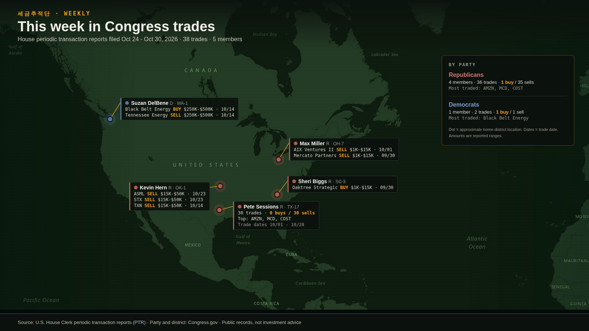

This week in Congress trades
Loading...

| Member | Party | District | Asset | Type | Amount range | Trade date |
|---|
Source: U.S. House Clerk periodic transaction reports (PTR). Party and district: Congress.gov. Map dots are approximate district locations. Public records, not investment advice. Open the control room